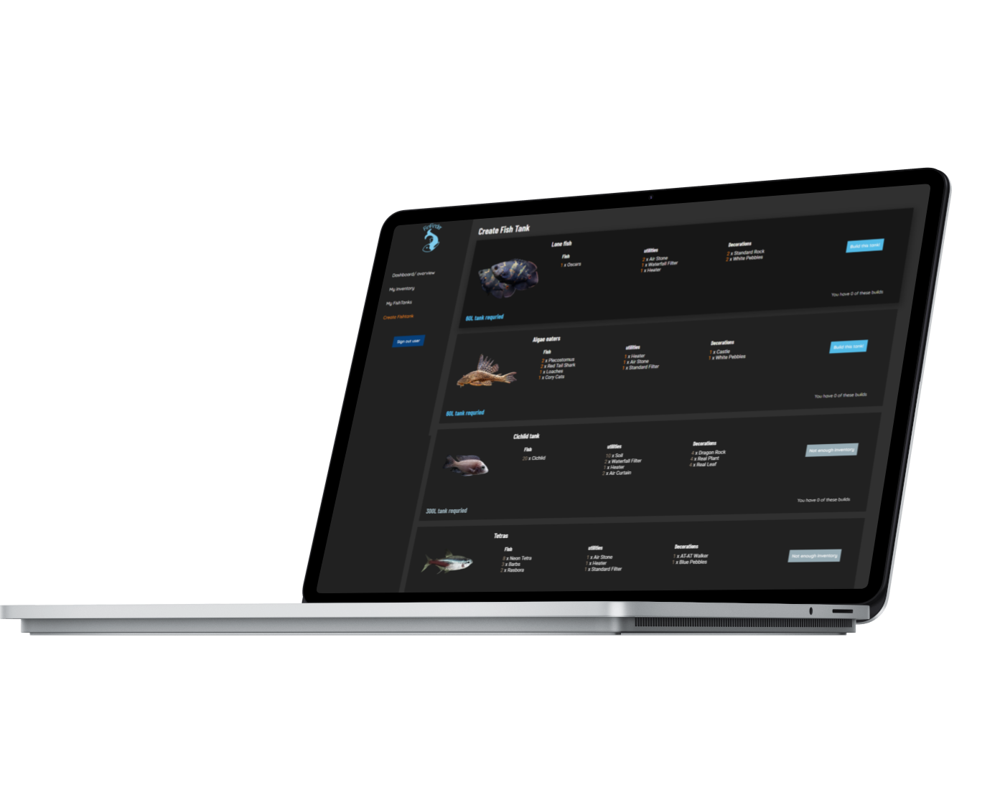

Build your own tank
FinFinder has a selection of 10 builds that users can build and store in a location of choosing, these builds are flexible and allows users to add any fish. But be careful! Some fish are incompatible with each other and this will break the eco-system that you have built. Take a look at our individual view to see which fish are compatible with one another
